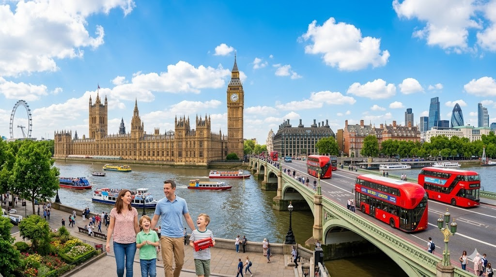
Hier stehen die wichtigsten Daten zu deinem Land. In der App baust du daraus deinen eigenen Steckbrief.
| Hauptstadt | London |
| Kontinent | Europa |
| Sprache | Englisch |
| Währung | Britisches Pfund |
| Einwohner | rund 57 Millionen Menschen |
| Fläche | etwa 130.000 km², ungefähr ein Drittel so groß wie Deutschland |
| Großer Berg | der Scafell Pike, 978 Meter hoch, der höchste Berg Englands |
| Nachbarländer | Schottland und Wales auf der Insel Großbritannien |
In England gibt es viele berühmte Orte. Diese vier solltest du kennen.
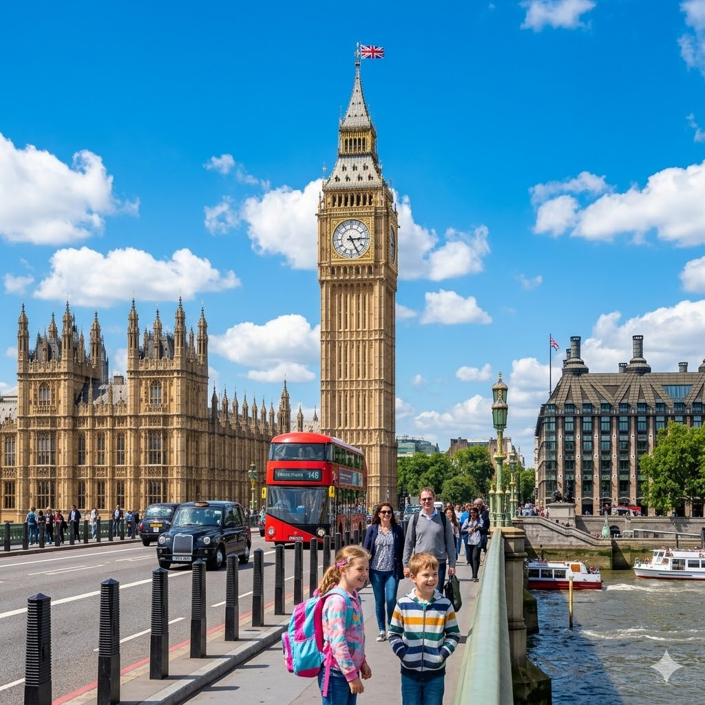
Big BenDer Big Ben steht in London am Fluss Themse. Der berühmte Glockenturm ist 96 Meter hoch. An allen vier Seiten hat er eine große Uhr. Im Turm hängt eine schwere Glocke. Sie schlägt die Stunden laut über die Stadt.
Grüne Wörter für die Appin LondonGlockenturm96 Meter hochgroße Uhrschlägt die Stunden
Tower BridgeDie Tower Bridge ist eine bekannte Brücke über die Themse in London. Die Brücke hat zwei Türme aus Stein. In der Mitte kann sie sich öffnen. Dann fahren große Schiffe hindurch. Viele Menschen kennen diese Brücke aus dem Fernsehen.
Grüne Wörter für die Appüber die Themsein Londonzwei Türmekann sie sich öffnengroße Schiffe
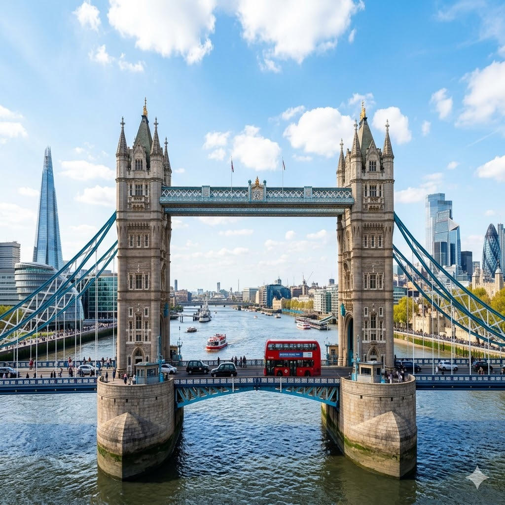
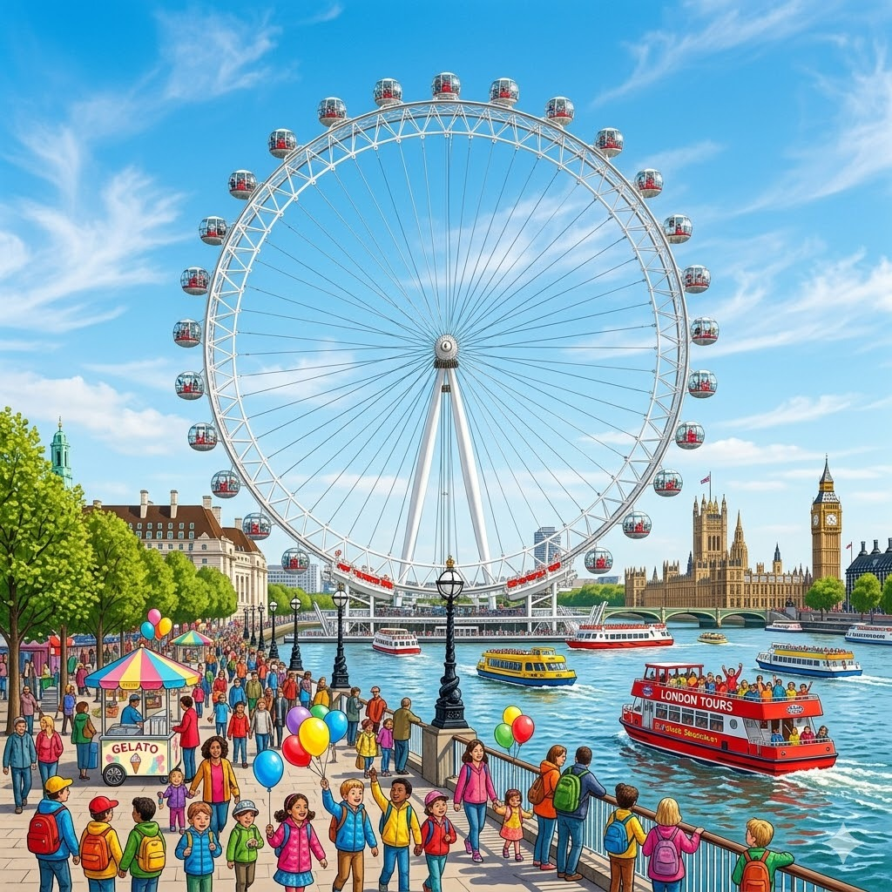
London EyeDas London Eye ist ein riesiges Riesenrad in London. Es ist 135 Meter hoch und steht am Fluss Themse. Die Gondeln drehen sich ganz langsam im Kreis. Von ganz oben hat man eine tolle Aussicht über die ganze Stadt.
Grüne Wörter für die AppRiesenradin London135 Meter hocham Fluss Themsetolle Aussicht
StonehengeStonehenge ist ein alter Steinkreis in England. Dort stehen viele große Steine im Kreis auf einer Wiese. Manche Steine sind höher als ein Mensch. Stonehenge ist rund 5000 Jahre alt. Warum die Menschen die Steine aufgestellt haben, ist bis heute ein Rätsel.
Grüne Wörter für die Appalter Steinkreisgroße Steineauf einer Wieserund 5000 Jahre altein Rätsel
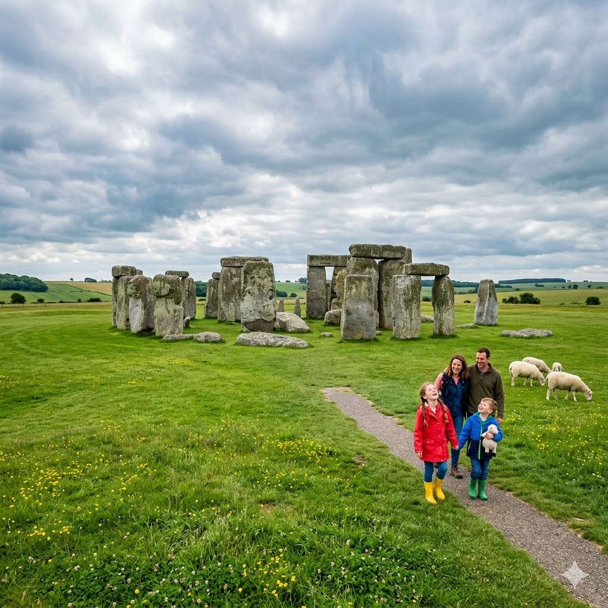
Diese Tiere leben in England und sind ganz besonders.
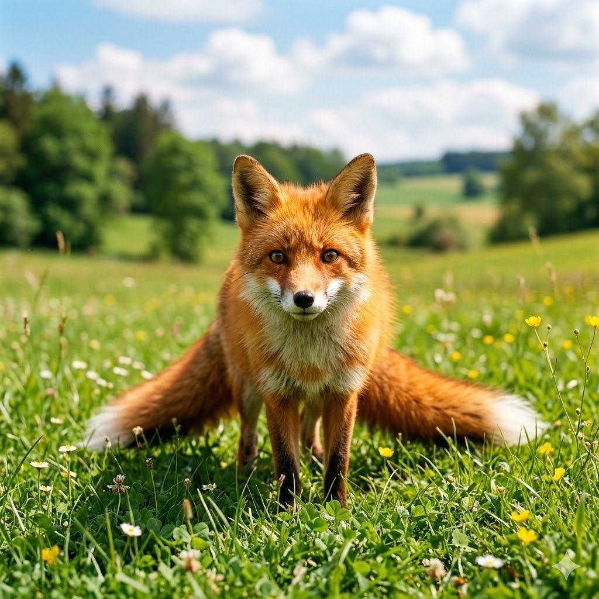
RotfuchsDer Rotfuchs ist in ganz England zu Hause. Er hat ein rotes Fell und einen buschigen Schwanz. Oft lebt er sogar in Städten und sucht dort nach Futter. Am liebsten frisst er Mäuse und kleine Tiere. Meistens ist der Fuchs nachts unterwegs.
Grüne Wörter für die Approtes Fellbuschigen Schwanzin Städtenfrisst er Mäusenachts unterwegs
RotkehlchenDas Rotkehlchen ist ein kleiner Vogel mit einer roten Brust. Man sieht es oft im Garten auf einem Ast sitzen. Es singt schön, sogar im Winter. In England ist das Rotkehlchen sehr beliebt und gilt fast wie ein Lieblingsvogel.
Grüne Wörter für die Appkleiner Vogelroten Brustim Gartensingt schönLieblingsvogel
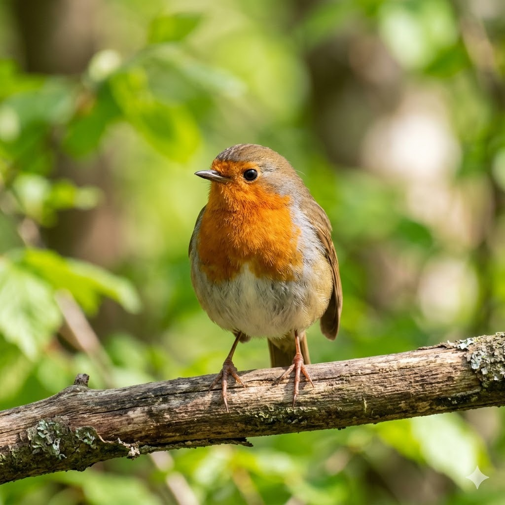
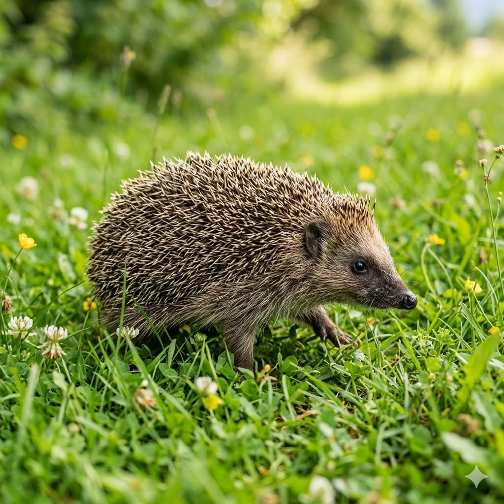
IgelDer Igel lebt in vielen Gärten in England. Auf seinem Rücken hat er viele Stacheln. Bei Gefahr rollt er sich zu einer Kugel ein. Der Igel frisst Insekten, Würmer und Schnecken. Er ist meistens in der Nacht unterwegs und schläft am Tag.
Grüne Wörter für die Appviele Stachelnrollt er sichfrisst Insektenin der Nachtschläft am Tag
In der App kannst du beim Essen das Foto nehmen oder dein Gericht selbst malen.
Fish and ChipsFish and Chips ist das bekannteste Essen in England. Es besteht aus Fisch und Pommes. Der Fisch steckt in einem knusprigen Teigmantel. Beides wird in heißem Fett frittiert. Das Gericht gibt es oft zum Mitnehmen.
Grüne Wörter für die AppFisch und Pommesknusprigen Teigmantelfrittiertbekannteste Essenzum Mitnehmen
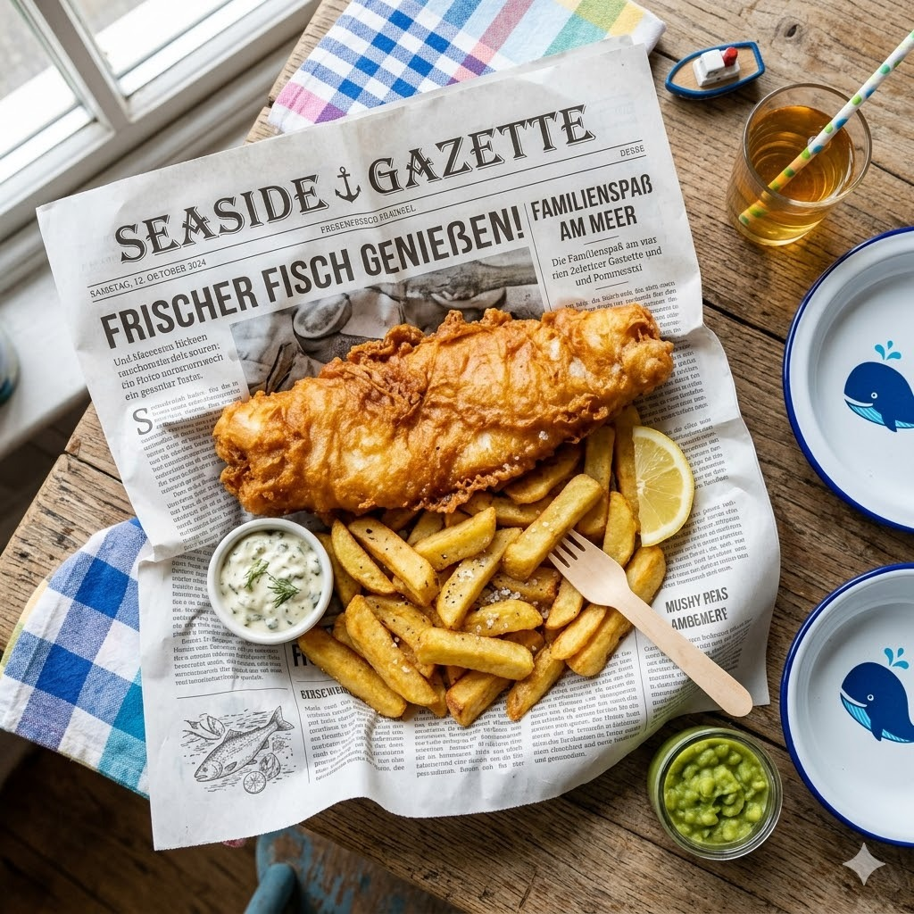
Sunday RoastDer Sunday Roast ist ein typisches Sonntagsessen in England. Auf den Teller kommt ein Stück Braten. Dazu gibt es knusprige Kartoffeln und viel Gemüse. Viele Familien essen den Sunday Roast am Sonntag gemeinsam.
Grüne Wörter für die AppSonntagsessenein Stück Bratenknusprige Kartoffelnviel Gemüsegemeinsam
SconesScones sind kleine süße Brötchen aus England. Man schneidet sie auf und bestreicht sie mit Marmelade. Dazu gibt man oft eine dicke Sahne. In England isst man Scones gern zum Tee am Nachmittag.
Grüne Wörter für die Appkleine süße Brötchenmit Marmeladedicke Sahnezum Teeam Nachmittag
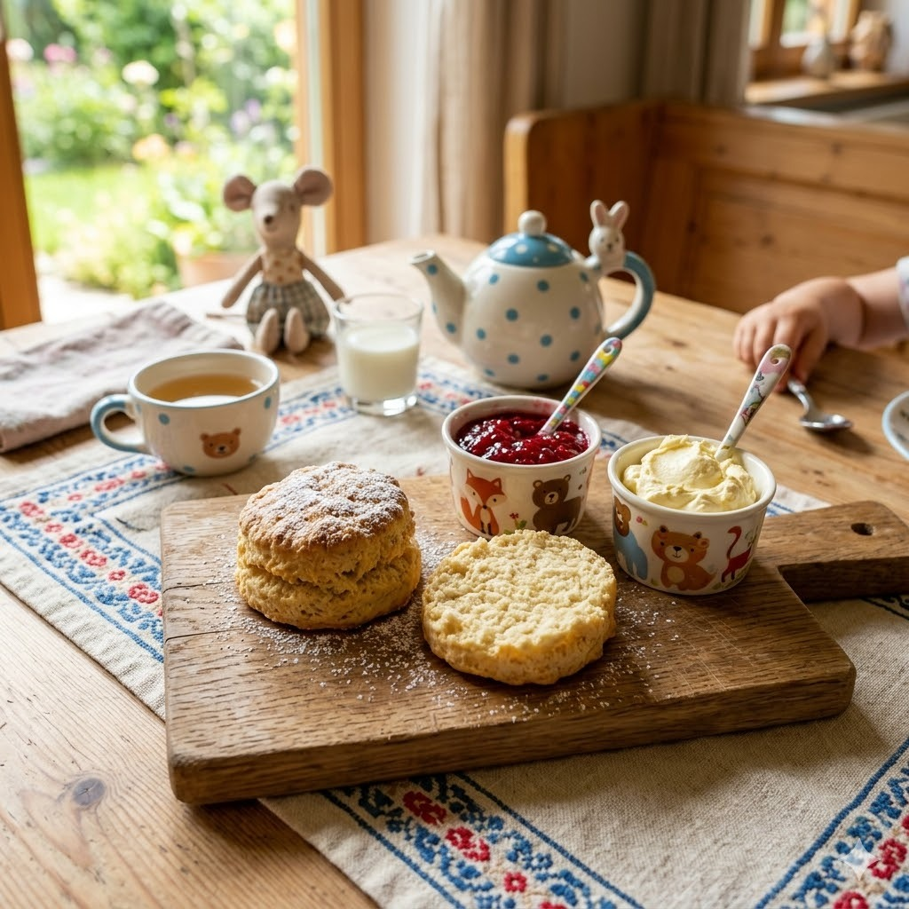
⚽ Gut zu wissen
Die Fußball-Nationalmannschaft von England heißt Three Lions, das bedeutet drei Löwen. Diese drei Löwen sind im Wappen auf dem Trikot zu sehen. Die Mannschaft spielt in Weiß. Der Fußball wurde in England erfunden, der Sport kommt also von hier.
Grüne Wörter für die AppThree Lionsdrei Löwenim Wappenspielt in Weißin England erfunden
🌟 Profi-Wissen
Der bekannteste Spieler ist Harry Kane. Er ist Kapitän und einer der besten Stürmer der Welt. Er spielt beim FC Bayern München in Deutschland und schießt sehr viele Tore. England wurde bisher nur einmal Weltmeister, 1966 im eigenen Land. Seitdem sagen Fans immer Football's coming home.
Grüne Wörter für die AppHarry KaneFC Bayern MünchenWM-Sieg 1966Football's coming homeThree Lions
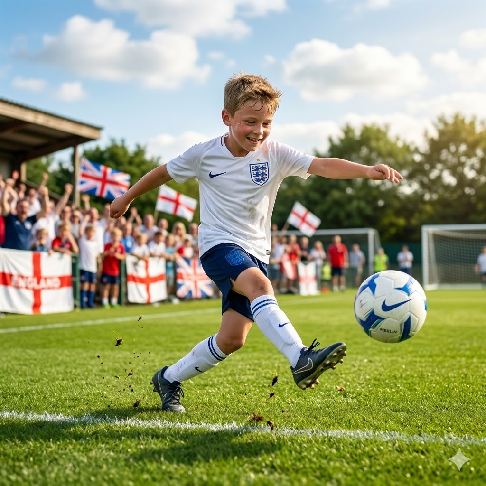
Schule in EnglandViele Kinder in England tragen eine Schuluniform. Morgens gehen sie früh zur Schule. Das Mittagessen bekommen sie oft in der Schule. Im Unterricht lernen sie viele Fächer. In der Pause spielen sie auf dem Schulhof.
Grüne Wörter für die AppSchuluniformfrüh zur SchuleMittagessenviele Fächerauf dem Schulhof
Fußball spielenFußball ist in England der Lieblingssport vieler Kinder. Viele spielen in einem Verein. Oft haben sie am Wochenende ein Spiel. Manchmal kicken sie einfach im Park. Am liebsten spielen sie mit Freunden.
Grüne Wörter für die AppLieblingssportin einem Vereinam Wochenendeim Parkmit Freunden
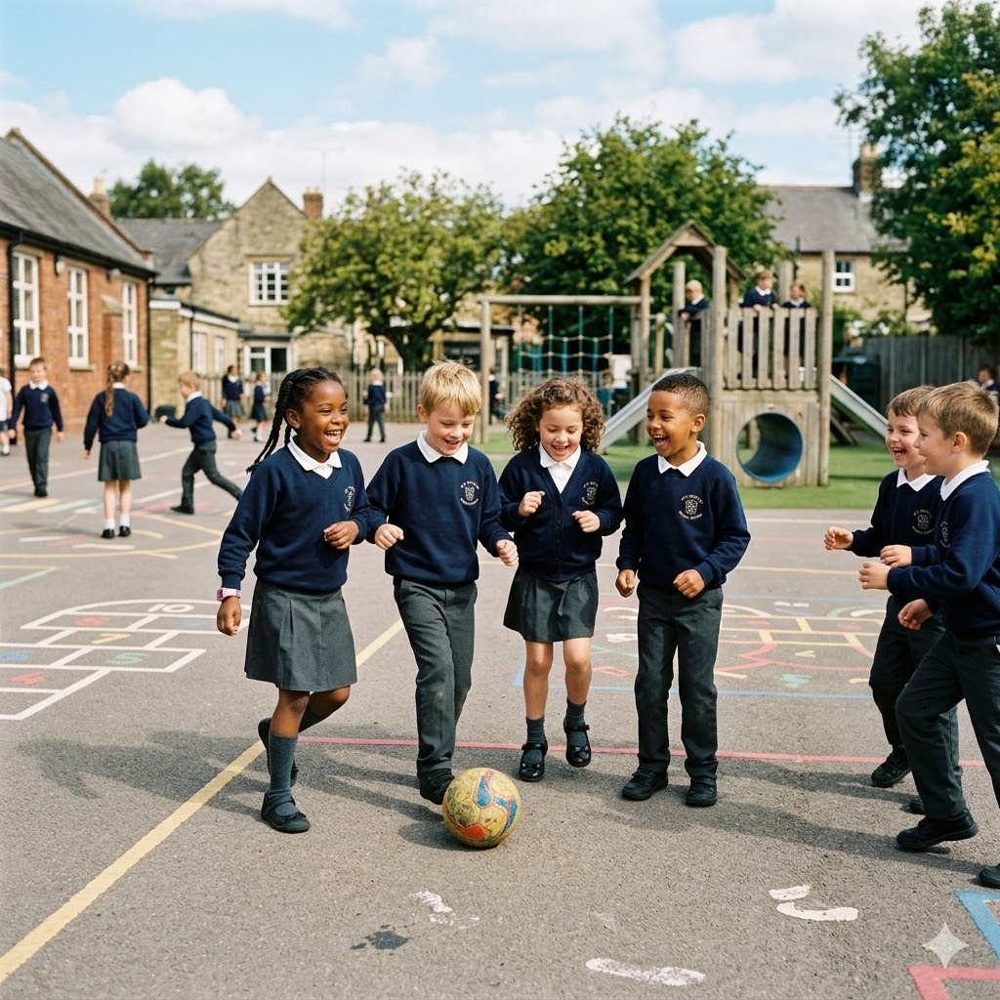